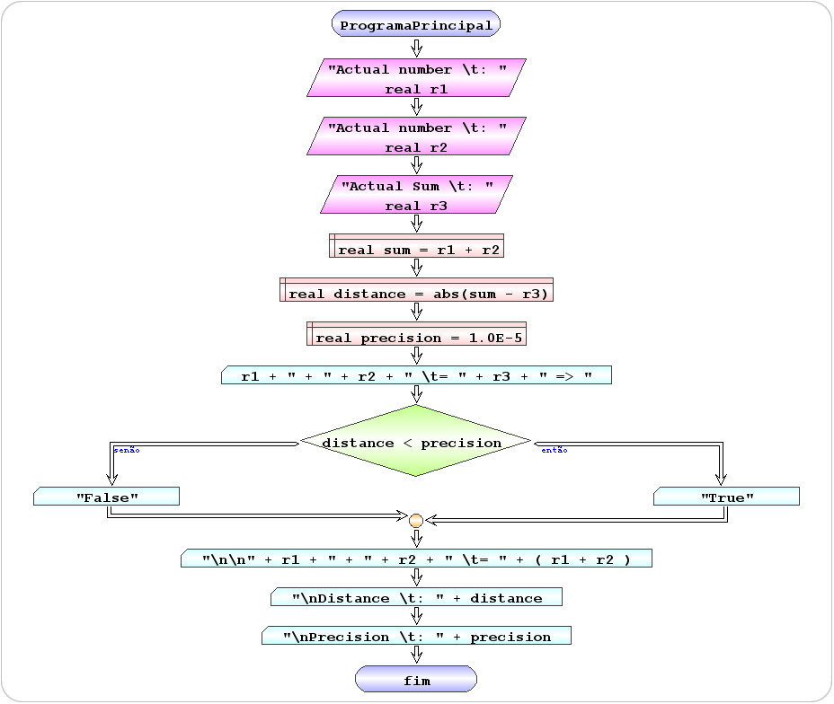

Build an algorithm that checks whether the sum of two real numbers equals a third with an accuracy of 5 decimal places.
r1 + r2 == r3
::::::::::::::::::
A L G O R I T M O
::::::::::::::::::
1 - read the values
(r1, r2, r3)
2 - calculate the sum of the first two (+)
(sum = r1 + r2)
3 - calculate the distance from the sum to the third (abs)
( distance = abs(sum -r3)
4 - compare the distance to the precision (1.0E-5)
( distance < precision)
5 - write the information according to the comparison
( "True" or "False" )
 |
 |
inicio ProgramaPrincipal
ler real r1 "Actual number \t: "
ler real r2 "Actual number \t: "
ler real r3 "Actual Sum \t: "
definir real sum = r1 + r2
definir real distance = abs(sum - r3)
definir real precision = 1.0E-5
escrever r1 + " + " + r2 + " \t= " + r3 + " => "
se distance < precision então
escrever "True"
senão
escrever "False"
fim se
escrever "\n\n" + r1 + " + " + r2 + " \t= " + (r1 + r2)
escrever "\nDistance \t: " + distance
escrever "\nPrecision \t: " + precision
fim ProgramaPrincipal
|